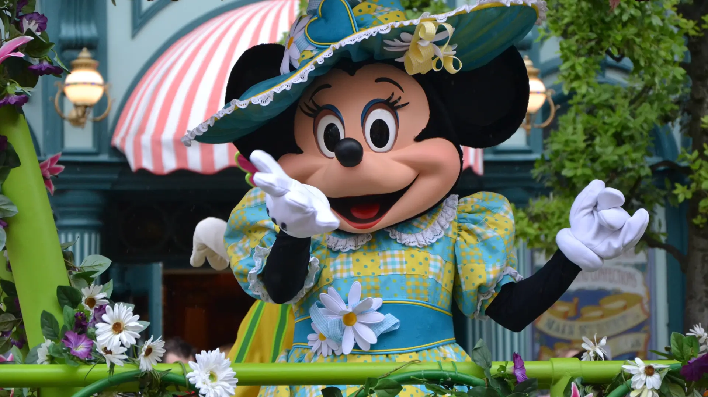
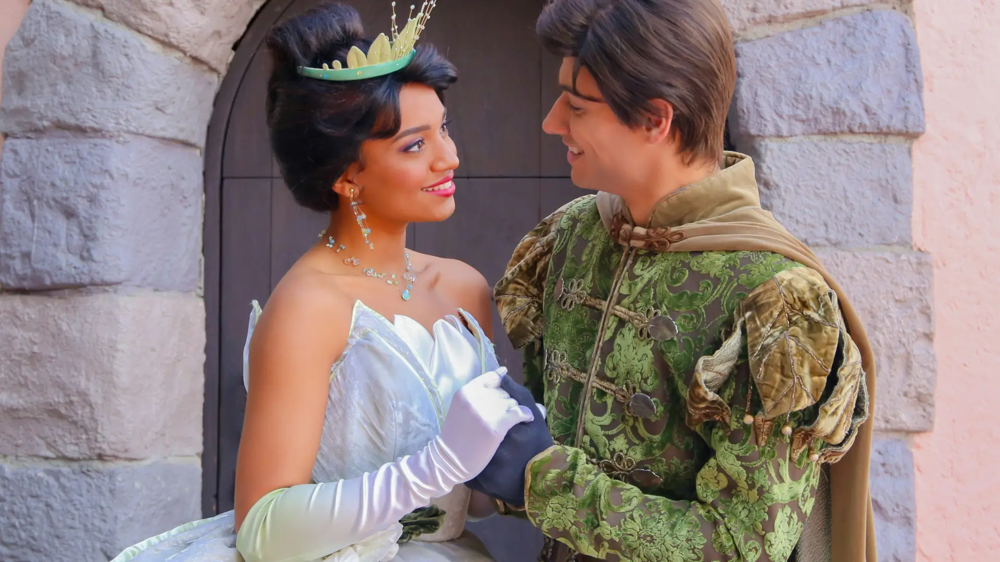

Disney Parks and Resorts
Disneyland and Disneyworld are some of the worlds most famous parks for quite literally anyone, whether you're an adult or taking your kids out for a family holiday, it is the experience of a lifetime and something that i feel everyone should experience at least once, it can be quite expensive mind you but we will talk about all that and more in our ultimate writeup for Disney's Parks.
Like we mentioned prior there are two different parks, one is Disneyland and the other DisneyWorld, now if you're not aware what the differences are between the two then let me tell you that the biggest difference is the sheer size of them, Disneyland covers around 500 acres of land as Disneyworld covers a whopping 27,000 acres.
That's not to say that the size is the only difference, there's different merchandise for example that you can only find across of the many locations in the world, and one that springs to mind is the Kingdom Hearts Pins that can be very hard to find depending on which location you visit, along with having different rides, hotels and such but we will get into that shortly.

Another big difference they share, and this may come as surprise if your a Disney fan is that the castles are actually different at both locations, and this is true of every Disney Castle across all the parks around the world, here's a little fun tidibit that only the more hardcore Disney fans will know, the castle we all know and love is actually inspired by a real castle in Bavaria, Germany, it's truly a sight to behold.
Talking of locations, there are a total of 12 locations from the very first one built in Anaheim, Florida all the way to Tokyo, Japan. If you've been to one and loved it and can afford it then you should absolutely check out some of the other locations, there is always so much to see and do, one of my favourite things is watching the fireworks and parades, it's truly magical having Disney and even Star Wars characters walking around the parks interacting with all the guests, getting your photos taken and just having the most magical time.

If you are a fan of theme park rides, you are absolutely not going to be dissapointed with the incredible rides on offer at any of the parks, let's start with Disney World. There are four enormous theme parks and the best park is they are completely unique to eachother having they're own unique asthetics.
Let's start of with EPCOT (Experimental Prototype Community of Tomorrow) this section of the park is inspired by the the city of the tomorrow, taking innovative ideas from all the new technologies that were emerging at the time, it houses a giant dome called space ship earth, a fantastical ride that takes you all the way throughout humanity's history.

Magic Kingdom Park, is where Disney Castle is situated and where the fireworks show normally takes place and it's home to some of the most fun rides in all of Disney theme parks in my humble opinion of course, we have the likes of Space Mountain which is one of the best rides i've ever been on along with the Dwarves mine cart and something for the little ones is Dumbo's elephant ride, along with alot more, it's honestly some of most fun you can have at the park, but that's not all.
Star Wars fans this is for you, ever wanted to go to the Galaxy's Edge? Well now you can! Check out Hollywood studios and everything they have to offer, venture forth to Savi's Workshop and create your very own lightsaber, if your really lucky you might even be able to get the very rare BLACK lightsaber! Now that's not all, don't worry because Hollywood Studios is also the home to Toy Story Land where you are able to interact with your favourite of Andy's toys.
We've not even scratched the surface when it comes to Disney Parks rides, there is honestly so many across all the different locations, that you would many visits to experience them all, honestly we're not joking there are currently over 150 attractions for you to experience, spanning across so many of Disney's franchises there is no shortage of fun to be had.
